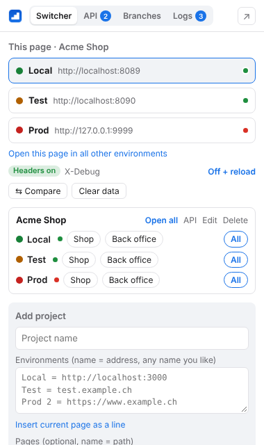
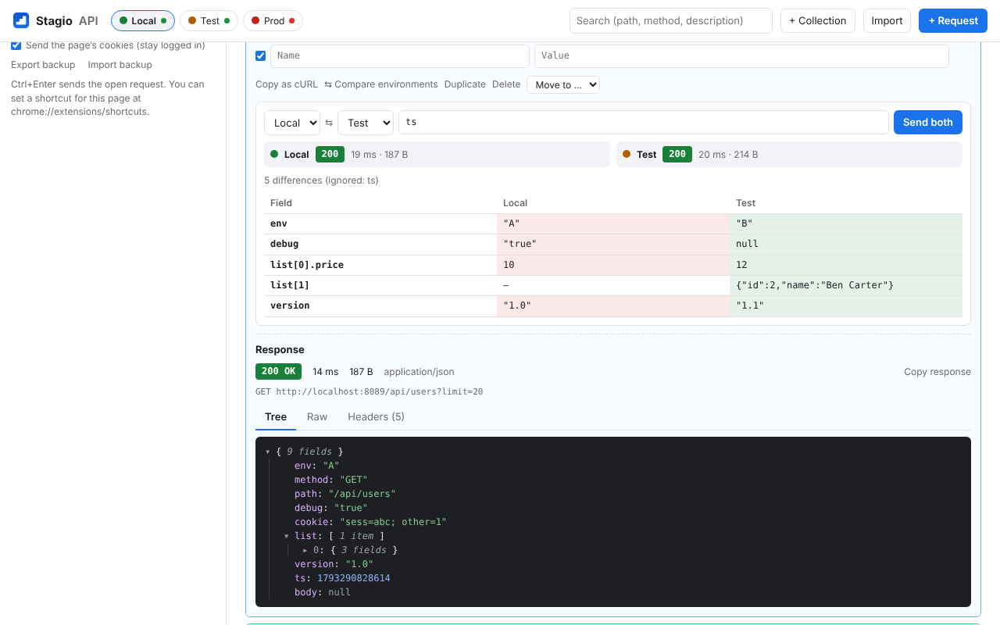
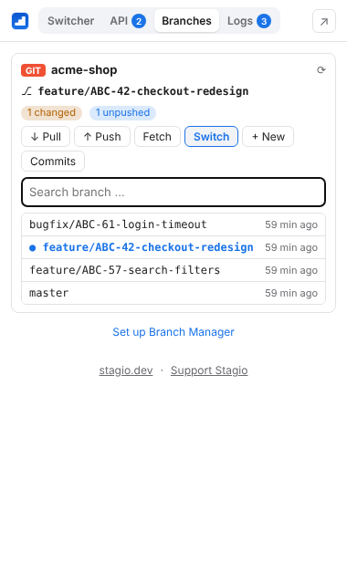

A Chrome extension for web developers who work on the same site in several environments. Open the current page on another environment, send API requests, see what fails on the page and check your branches. Eine Chrome-Extension für Webentwickler, die an derselben Seite in mehreren Umgebungen arbeiten. Die aktuelle Seite in einer anderen Umgebung öffnen, API-Requests senden, Fehler der Seite sehen und Branches prüfen.
Free. No account. Data stays in your browser.Kostenlos. Kein Konto. Die Daten bleiben in deinem Browser.

If your backend serves an OpenAPI document (for example /v3/api-docs with springdoc), Stagio finds it and creates all requests. Variables like {{token}} are set per environment, so the same request works everywhere. Liefert dein Backend ein OpenAPI-Dokument (zum Beispiel /v3/api-docs mit springdoc), findet Stagio es und legt alle Requests an. Variablen wie {{token}} werden pro Umgebung gesetzt, derselbe Request funktioniert also überall.


Shows the current branch of each repository with changed files and unpushed commits. New branches can be named from a ticket number, for example feature/ABC-123-fix-login. Zeigt den aktuellen Branch jedes Repos mit geänderten Dateien und ungepushten Commits. Neue Branches lassen sich aus einer Ticket-Nummer benennen, zum Beispiel feature/ABC-123-login-reparieren.
How to set up the helperHilfsprogramm einrichtenStagio is free. If you find it useful, you can buy me a coffee. Stagio ist kostenlos. Wenn es dir nützt, kannst du mir einen Kaffee spendieren.